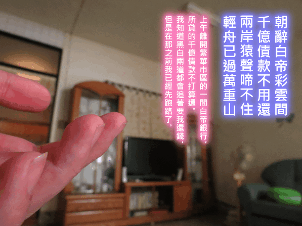

PhotoCap 6 圖說
PhotoCap 6 有很方便、實用的文字編輯能力，所以，雖然我安裝了 GIMP 2.6，要製作「圖說」時還是使用 PhotoCap 6。

下載空白工作檔
標準使用說明
Step 1:
使用 PhotoCap 6 開啟 10120731A.pcl。
Step 2:
將圖片複製到「剪貼簿」，然後貼到 PhtoCap 6。（注意！不是拖曳！）
Step 3:
點功能表的「影像」→「影像大小」（或按 Ctrl+I），修改寬度與高度。
建議取消「強制等比例」與「所有物件圖層一併調整」的勾選，再按 OK 鈕。
Step 4:
在右方的「圖層」視窗，用滑鼠左鍵長按「影像物件」不放，然後拖曳到「文字圖層」下方。
Step 5:
修改文字圖層的內容、顏色、大小、位置。
Step 6:
儲存工作檔，以備將來能修改內容，然後另存新檔為 JPEG 或 PNG 圖片。
快速使用說明
這招不用調整影像大小，而且直接修改的文字儲存在原圖上。
但也因此，第一次使用這招的人，請「複製、貼上」新的圖片來練習，以免在重要圖片貼上了文字，結果不知情儲存了，下次開機才發現而且後悔，就救不回來～
Step 1:
使用 PhotoCap 6 開啟 10120731A.pcl。
Step 2:
複製文字圖層，不然到了 Step 3 會不見。
Step 3:
拖曳圖片到 PhotoCap 6。
Step 4:
貼上文字圖層。
Step 5:
修改文字圖層的內容、顏色、大小、位置。
Step 6:
儲存圖片：「注意！這時儲存的是原圖！而不是工作檔、也不是另存新檔」。
然後另存新檔為 *.pcl 工作檔，以備將來能修改內容。